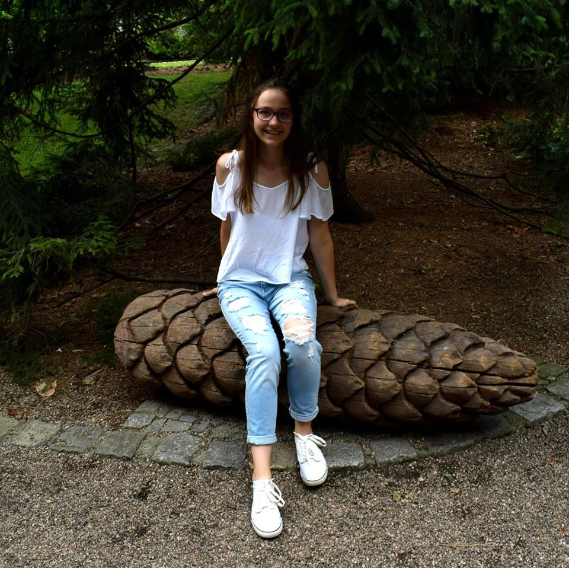
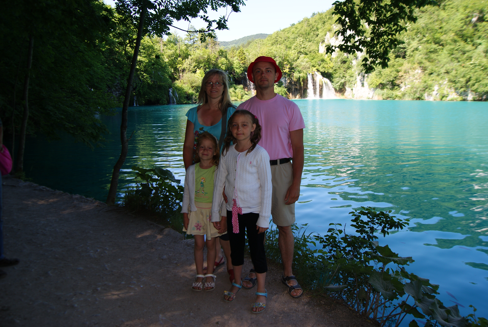

„
Net ir tūkstančio mylių kelionė prasideda nuo vieno žingsnio.
“
„
Net ir tūkstančio mylių kelionė prasideda nuo vieno žingsnio.
“
Aš esu Austėja.
Man 16 metų. Mokausi KTU gimnazijoje, 10a klasėje.
Esu atvira, tačiau savimi nepasitikinti asmenybė. Turiu ganėtinai stiprią valią, esu užsispyrusi, bet dažnai tai pasireiškia ne vietoje ir ne laiku. Turiu savo nuomonę, kurią gan dažnai ir išsakau, deja, tai ne visada privalumas.
9-erius metus mokausi muzikos mokykloje. Fortepijono skambesys užburia, pamilau ir gitarą. Taip pat mokiausi dainuoti(ir toliau dainuoju:)). Muzikos mokykla man davė daug daugiau nei tik mokėjimą valdyti savo balsą ar instrumentą.
Kiekvieną vasarą su šeima keliaujame ir viena iš man labiausiai įspūdį padariusių šalių yra Kroatija. Nebuvau didelė, kai ten keliavome, tačiau kelionę prisimenu.
Atrodo galėčiau daaaar rašyti, bet žinau, kad labai ilgo įrašo niekas neskaito:).
Taigi jei iškilo klausimų, parašykite man į el. paštą austeja0211@gmail.com. O jei neiškilo - iki kitų susitikimų mano blogo įrašuose!
